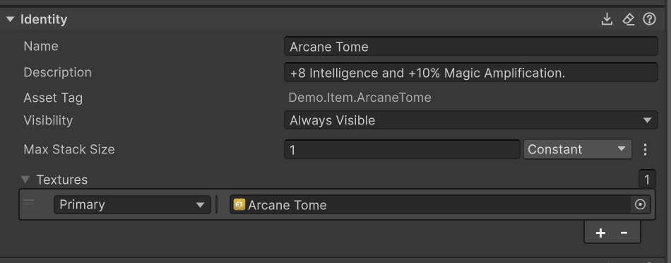

Identity
The Identity section names the item, shows its asset tag, and sets how many of it one inventory slot holds.

Arcane Tome's Identity section.
| Property | Description |
|---|---|
| Name | The item's display name, which also gives the asset tag. Renaming the item changes its tag, so update anything that names the old tag. |
| Description | Free text for your UI. |
| Asset Tag | Read-only, made from the Name: punctuation is dropped, and each word is capitalised and joined. |
| Visibility | A tag your UI can read for filtering, such as Always Visible or Not Visible. The Forge lists it, and the runtime doesn't act on it. |
| Max Stack Size | How many of the item one inventory slot holds: a number field read at the item's level, as StackSizeOf(spec) reads it. At 1 or less, each is a slot of its own. |
| Textures | Icons, each paired with a tag. The texture tagged Primary is the item's icon; without one, the first texture is used. |
The asset tag is stored when you edit the Name, and the inspector header shows it after the item's type. If the stored tag differs from the one the Name gives, it shows in warning text with an Update button that stores the new one.
Whether an inventory may hold an item more than once is the entity's choice, through its Allow Duplicate Items setting (see Entities).
Stacking
An item stacks in one inventory slot, up to its Max Stack Size.
- A give fills the item's stack first, up to its Max Stack Size, and takes no new slot.
- A full stack opens another only with Allow Duplicate Items on. Without it, what doesn't fit isn't taken.
- A slot's count is its container's
ItemStacks.
Code gives and takes stacks through the entity's item system:
| Method | What it does |
|---|---|
ItemSystemComponent.GiveItem(item, count) |
Takes what fits, and returns how many it took. |
GiveItem(item, out index) |
Gives one, into the stack if there's room. |
RemoveItem(item, count) |
Takes stacks off, from the last slot first. A slot whose last stack comes off goes. |
RemoveItem(item) |
Still takes the whole slot. |
A stack applies its effects and its ability once.
- An Item Stacks scaler reads the count of the item that applied the effect. So a magnitude of 5 with Multiply With Scaler grants +5 a stack.
- As the count changes, an equipped item's effects read it again.
- An effect that reads an item's stacks where no item in the project applies it reads 1, and the Problems view says so.